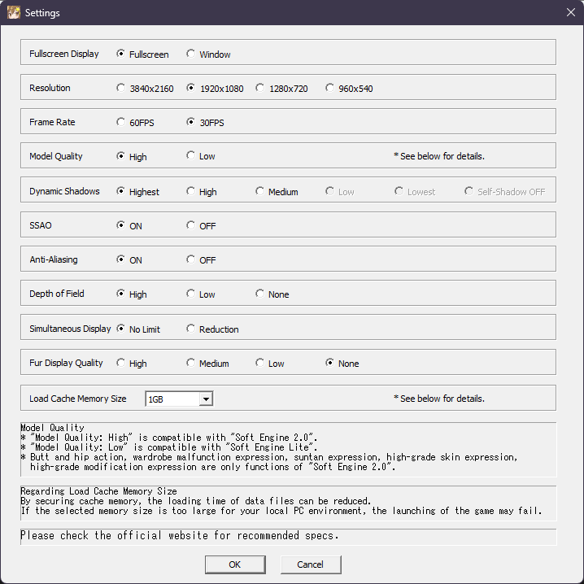

this all happend while I was recording the Birthday Special, when I came down to swapping chars to output their birthday voicelines. when the time came that I switched to Nagii, all hell broke loose -- at timestamp 35:10 (as shown below) it'd become clear that once I set her outfit to her White Day one, it tried to load all the resources but failed to do so.
now I did a number of trials-and-errors to the point that I instinctively reported this to the devstaff via fb (outlined here).
somehow, before working on this blog a few hrs ago I didn't realize that when I initially got Nagii's outfit I was on low graphics mode as shown below:
so I decided to take on that approach -- putting graphics on low for the meantime as I swap her outfits -- only to realize a few things:
immediately, I switched her outfit to the "default" one -- being the Champs Elysees -- and reverted back the configuration as shown below:
so far I did the test run of the game and everything went fine, so it might be good for Session 352 happening a lil later. I might also go back to the model quality low configuration in the next sessions for the sake of framerate, but that'll be limited to a max of 2 per tenth session starting from session 350.
but until then I hope this'll get fixed immediately so that I can see Nagii in a whiteday outfit again, but in much higher quality than in the previous vod.
published